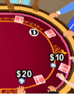

24 |
De basisregels |
 |
Texas Hold 'Em Poker is een community kaartspel met vier biedrondes. Eén speler is de dealer. Deze positie heet de ‘button’ en deze wisselt, met de klok mee, na elke hand.
De twee spelers links naast de dealer zijn respectievelijk de ‘kleine blind’ en de ‘grote blind’. Ze zijn de enige twee spelers die geld inleggen in de pot voordat de kaarten worden gedeeld.  Iedere speler ontvangt twee gesloten kaarten die ‘hole cards’ worden genoemd.
De eerste biedronde begint bij de speler die meteen links naast de grote blind zit en dit blijft zo, met de klok mee. Als de eerste biedronde is voltooid, worden er drie community kaarten open gedeeld in het midden van de tafel, dit wordt de flop genoemd.
De tweede biedronde begint bij de eerste overgebleven speler die links naast de button zit. Het inleggen gebeurt met de klok mee. Na de tweede biedronde, wordt een vierde community kaart, genaamd de ‘turn’ open gedeeld op tafel.
De vierde biedronde begint bij de eerste overgebleven speler die links naast de button zit. Het inleggen gebeurt met de klok mee. Na de derde biedronde, wordt een vijfde community kaart, genaamd de ‘river’ open gedeeld op tafel.
The fourth round of betting starts with the first remaining player seated to the left of the button. Betting continues to move clockwise. Spelers moeten hun twee gesloten kaarten combineren met community cards die open worden gedeeld om zo de best mogelijke vijf-kaart hand. Je kunt beide gesloten kaarten gebruiken, één gesloten kaart of geen gesloten kaarten gebruiken (Board spelen) om een hand te maken. De beste hand met vijf kaarten wint de pot. Bekijk ‘Pokerhanden’ voor meer informatie. Iedere speler krijgt een bepaalde tijd om een zet te doen tijdens online games zodat het spel niet gerekt wordt. Belangrijk: Vele spelers zullen met bluffen proberen om jou te laten folden of callen als ze een uitstekende hand hebben. Anderen zullen voorzichtig spelen, in afwachting op een geweldige hand. Als je meer pokertrucs wilt leren of tips wilt lezen, dan adviseren wij je om ‘Game Tips’ (Speltips) te bekijken. |


 |
 |
 |